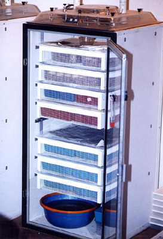
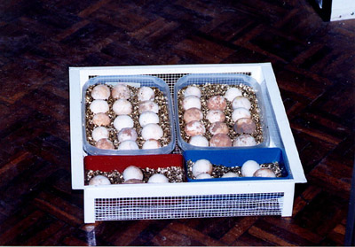
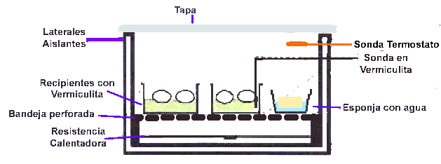
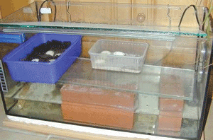
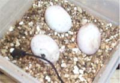

|
TÉCNICAS DE
INCUBACIÓN
Este es un punto de partida
para aquellos que no están muy puestos en las técnicas de la
incubación, es una generalización, cada especie tiene unos
parámetros que serán los que nos darán el mayor éxito, Es
aconsejable anotar los parámetros de la incubación e irlos
comparando, eso le ayudara a mejorar resultados e
identificar errores
Es posible que algunas personas digan que han incubado, con
éxito, huevos en una caja con ventilación, o de maneras aun
más sorprendentes, no hay que hacerles mucho caso, es
posible que algún huevo haya llegado a eclosionar pero si
realmente se quiere tener éxito es necesario una incubadora,
si utiliza la incubadora adecuada las oportunidades de
eclosión serán mayores. Hay disponibles incubadoras
comerciales (Jaegel, Lyon) para huevos de reptil, o puede
construírsela. Si usa una incubadora de huevos de aves,
(evidentemente sin volteo automático) tenga mucho cuidado
con el ventilador que fuerza el aire, ya que los huevos de
tortuga se deshidratan más fácilmente que los de aves, y la
entrada continua de aire del exterior, si no hay un control
de humedad puede provocarlo.

La incubadora proporciona una temperatura estable, la
mayoría de los huevos tienen un margen de tolerancia, para
fluctuaciones de temperatura durante periodos cortos, por
tanto no se asuste si la temperatura fluctúa dentro de un
margen aceptable. Eso también pasa en la naturaleza, pero
con el fin de evitar daños al embrión cuyo desarrollo
depende de la temperatura, conviene mantener esta lo mas
estable posible.
¿Como ha de ser la incubadora? este es el punto esencial si
se desea tener éxito, los huevos se ponen dentro de un
recipiente tipo tupperware al que haremos algunos agujeros
en la tapa. y este recipiente se pone en la incubadora. La
incubadora tiene una fuente de calor que se controla por un
termostato, la temperatura del aire alrededor del huevo será
controlada por el termostato, cuanto mayor precisión tenga
este, mejor nos controlara la temperatura, debe de tener un
margen de disparo pequeño, para evitar fluctuaciones, si
podemos hacerlo, la sonda del termostato, debe ponerse en el
recipiente donde se encuentran los huevos, si la ponemos
fuera la temperatura será distinta, si eso no es posible,
podemos usar un termómetro digital cuya sonda meteremos en
el recipiente dónde están los huevos y ajustaremos el
termostato de acuerdo con la indicación de ese termómetro,
en r este caso es importante que calibremos ambos
termómetros, el del termostato y el digital con el fin de
saber cual es su posible error y corregirlo, esto se hace
colocando las dos sondas juntas y poniendo un termómetro de
mercurio que nos sirve de patrón, tomamos las lecturas de
todos y ya podemos hacer las correcciones que sean
necesarias.
La fuente de calor no debe de estar pegada al recipiente
donde están los huevos, ya que puede producir focos
calientes que dañarán los huevos, Es conveniente el uso de
ventiladores para homogeneizar la temperatura en toda la
cámara de incubación y así habrá menor posibilidad de zonas
frías y calientes.
Una Incubadora Ideal, debería tener:
1. Un termostato de calidad para controlar la temperatura,
los tipos de la sonda son más buenos. Un on/off simple
funciona bien, pero si es uno que se puede controlar ambas
temperaturas, arranque y corte, mejor.
2. La sonda del termostato se puede colocar en el recipiente
que tiene los huevos.
3. La fuente de calor esta aislada de la cámara. Esto
proporciona una amortiguación de subidas súbitas de
temperaturas que podrían producir un desastre de la
incubación.
4. Un ventilador que nos arrastre el aire creando una falsa
pared y lo haga recircular a través de la incubadora.
5. Todos los huevos se mantienen en el tupperware dónde la
humedad se controla mejor. Estos recipientes estarán
rellenos de vermiculita, humedecida al 50 % en peso, ellos
nos proporcionan además un efecto tampón frente a las
variaciones de temperatura, estos recipientes deberán tener
algunos agujeros en su tapa para proporcionar aire a los
huevos en vías de desarrollo, es conveniente poner la sonda
del termostato en este recipiente y si no la del termómetro
digital.
6. Controlar la temperatura, los termómetros digitales son
baratos y van muy bien, ubique las sondas en los recipientes
que contienen los huevos.
7. No permita que el chorro aire caliente incida
directamente sobre huevo, el aire debe calentar el
recipiente que contiene los huevos, de una manera uniforme.
Ello hará que aunque la temperatura exterior fluctué la
interior se mantenga prácticamente constante con ligeras
desviaciones.
8. Una aireación suficiente. Si se está incubando un gran
numero de huevos hay que permitir el flujo de aire entre las
cajas para mantener la temperatura uniforme.

Como ya se ha dicho el substrato ideal es la vermiculita, es
un sustrato inerte, fácil de esterilizar, y manejar, se
puede conseguir en almacenes de jardinería y construcción,
en principio se mezcla al 50 % de su peso con agua, se
distribuye en los recipientes y se colocan en ellos los
huevos, Los huevos, deben colocarse en la incubadora, lo
antes posible después de la recogida, sobre todo si no se
sabe exactamente cuando fueron puestos. Hay que poner el
huevo en la incubadora en la posición exacta en que estaba
enterrado (una pequeña marca hecha con un lápiz nos ayudará
a no variarla), de todas maneras reposicionar los huevos
dentro de un margen de dos días desde el momento de la
puesta, no afectara al desarrollo embrionario, pero una vez
colocados en la incubadora, déjelos tan tranquilos como sea
posible. Los huevos se depositan sobre la vermiculita, de
modo que asome un tercio del huevo, opcionalmente se pueden
cubrir con una capa de musgo húmedo.
Si va a hacerse la incubadora recuerde que el factor más
importante es mantener un rango estable de temperatura entre
27° C y 33° C. Por consiguiente invierta en un buen
termostato electrónico, Un termómetro preciso es esencial,
mejor uno digital con máxima y mínima. Para las especies
donde los niveles de humedad son importantes son útiles los
termómetros combinados con higrómetros. El otro requisito
del equipo es una fuente de calor, puede ser una alfombrilla
térmica fiable que se encaja en el suelo de la incubadora y
se conecta directamente al termostato.

Con este material, una incubadora simple pero muy eficaz se
puede construirse a un costo mínimo, puede usarse, corcho
blanco, madera o cajas de embalar, con agujeros para entrada
y salida de aire en los lados, como paredes de la
incubadora. El diagrama muestra una construcción básica.
Coloque la estera de calor en la base, ponga una bandeja
perforada, encajada sobre un soporte, dejando un hueco de
aproximadamente 5 cm. entre la alfombrilla de calor y la
bandeja. Los huevos deben ponerse en cajitas de plástico
(Ej. tarrinas de mantequilla, etc.) que habremos rellenado
con vermiculita ligeramente húmeda. Las cajitas se colocan
entonces en la bandeja de la incubadora. Para medir y
controlar la temperatura, ponga la sonda del termómetro en
la vermiculita con los huevos, y ponga la sonda del
termostato en la pared interna de la incubadora para que
controle la temperatura del aire. También puede poner la
sonda del termostato en la vermiculita, pero dado que aquí
no tenemos ventilador que nos mueva el aire, podemos tener
puntos calientes, mejor que el disparo del termostato se
realice por las variaciones del aire de la cámara de
incubacion.

Los requisitos de humedad varían según las especies, pero
una humedad media de aproximadamente 70% es deseable
generalmente, aunque hemos conseguido con cerca del 50%. Una
esponja pequeña en una tina
de plástico de agua caliente puesta en el lateral de la
bandeja de la incubadora mantiene la humedad. Un ladrillo o
un pedazo de pizarra como apoyo de la bandeja, ayuda a
estabilizar la temperatura dentro de la unidad, igual que si
se forran dos o más paredes con lámina de aluminio. Cubra la
incubadora con una de tabla o haga una tapa de poliestireno,
un trozo de perspex como tapa es particularmente eficaz como
ayuda para mantener la humedad. Finalmente, aunque su
incubadora debe tener agujeros para la circulación del aire,
quite la tapa durante un minuto al día para, sin perturbar
la temperatura, ayudar a la circulación de aire.

Otra incubadora casera que da muy buenos resultados, es la
que se haces usando un acuario, colocamos en el fondo del
acuario la resistencia con su termostato, y unos topes,
sobre ellos ponemos la bandeja que tendrá los recipientes de
vermiculita con los huevos, se llena la parte de abajo con
agua y se pone en marcha, el acuario se cubre con una tapa
inclinada, de manera que el agúa de condensación no caiga
sobre los huevos, la resistencia calienta el agua, que
calentara todo el acuario y además se mantiene el grado de
humedad adecuado.
El sexo de las crías de tortugas es determinado mediante la
temperatura de la incubación, aunque la investigación no ha
demostrado todavía en qué fase en desarrollo exactamente es
crucial. Sin embargo, el rango más bajo de temperaturas
convenientes (27° 29.5° C) produce machos, y el rango más
alto (32.5 a 33C) produce hembras. Entre, una mezcla de
varones y hembras generalmente los resultados.
Uno de las preguntas mas comunes es ¿Cómo puedo saber si un
huevo es fértil?." No todos los huevos de una puesta tienen
que estar necesariamente fecundados, y los animales muy
jóvenes o viejos pueden hacer una puesta en la que ninguno
sea fértil. De igual manera la hembra que deja los huevos
sobre la tierra o en los rincones puede estar poniendo
huevos fértiles. Una norma muy elemental, ponga siempre los
huevos en la incubadora. Después de tres semanas
aproximadamente, verifíquelos cuidadosamente.
Los indicadores claros de esterilidad son:
El huevo todavía esta rosado o translúcido, a las 3-4
semanas los huevos fecundados normalmente empezarán a
ponerse opacos y blanquecinos.
El huevo es muy transparente a la luz y se percibe sin
sustancia.
¡De todas formas, deje los huevos solos y espere a ver que
pasa! Las tortugas son animales muy pacientes y sus dueños
necesitan ser igualmente pacientes, aunque eso a veces es
difícil.
El tiempo de incubación varía mucho entre las especies. Las
G. Pardalis pueden tardar 130 días en nacer, y las
carbonarias mucho más tiempo. En general, la temperatura mas
baja, dentro del rango aceptable, alarga el periodo de la
incubación. Sin embargo, dentro de una misma puesta el
tiempo de salida del cascaron puede variar
considerablemente.
Algunas crías de tortuga
pueden nacer en pocas horas sin apenas advertencia. Otras
pueden necesitar varios días. La primera señal es el picoteo
de un agujero diminuto que aparece en la cáscara, lo hace la
cría, usando su diente de huevo (qué después desaparece) en
busca de una fuente de oxígeno adicional. Habiendo
satisfecho esta necesidad la cría pueden permanecer en el
huevo un día o dos y pueden continuar absorbiendo el resto
de su bolsa de la yema, antes de empezar a romper el huevo
usando sus patas delanteras y garras traseras. Saliendo del
cascaron normalmente, en esta fase de desarrollo no presenta
ningún problema y los remanentes de yema serán absorbidos
dentro de las siguientes 24 horas.
No se sienta tentado a ayudar a una cría a salir ya que eso
puede producir un nacimiento prematuro con una bolsa de yema
grande, y muerte con toda seguridad. Normalmente todas las
crías de tortuga sanas y normales, normales pueden salir del
cascarón por sus propios medios. Sólo en circunstancias muy
excepcionales, cuando una cría ha estado esforzándose
durante algún tiempo y es evidente que está listo para nacer
pero algo se lo impide, por ejemplo, por una membrana
especialmente dura que bloquea sus patas traseras, o que los
trozos de cáscara están bloqueando los ojos del bebé, puede
considerarse dar una ayuda. Los criadores inexpertos no
deben intervenir, ya que las ayudas serán mas perjudiciales.
Los bebes de tortuga, están con el plastrón doblado dentro
del huevo y a menudo, al nacer, esta realmente arrugado.
También puede haber una bolsa de yema colgando, pero suele
ser pequeña, se absorbe en un par de días y la abertura
umbilical se cerrara normalmente. Algunas crías, nacen
dejando una cáscara totalmente limpia. En otros casos, dejan
una cantidad de pequeños restos, de membranas en la cáscara.
Esto puede asustar a los nuevos criadores que pueden
confundir la bolsa de yema con un colgajo. Pero, si el bebé
está fuera, todo debe de estar bien.
Al salir del cascarón, la tortuga diminuta debe llevarse a
una zona de cría dentro de un vivarium ya calentado.
Previamente, dé, al bebe, un baño en agua caliente poco
profunda, que le animara a beber y le ayudara a eliminar
cualquier resto de vermiculita o cáscara que pueden tener
pegado. Después ponga al bebé en una zona pequeña dentro del
vivarium. Eso puede ser algo tan sencillo, como un
recipiente de comida de plástico o una bandeja de semillas
pequeña, recubierta con papel de la cocina ligeramente
humedecido. Incluya pedazos de cáscara de huevo como
suplemento de calcio. Las tortugas muy jóvenes, se esconden
instintivamente de los rapaces, por ello asegurese de hacer,
bien con papel de cocina, bien con otro material, alguna
cueva para que el bebé pueda resguardarse.
Controle que la cría sea normal y parezca sana, sobre todo
los ojos, nariz y pico. Las anormalidades graves, como no
tener ningún ojo, no son comunes, pero, desgraciadamente a
veces se dan.
En estas paginas puedes encontrar información de como hacer
tu propia incubadora
• Karniur's incubator page
• Home made incubator
• Silas's Homemade Incubator Flash
• A model for an incubator
• Come costruire un'incubatrice?
• OSAKA en Barcelona fabrica excelentes termostatos y
controladores de humedad.
Actualmente se estan realizado estudios sobre las
variaciones de temperatura de incubación día/noche se puede
encontrar información sobre el tema en ingles en Incubator
With Electronically Regulated Daily Temperature Cycle Part 1
y la continuación Incubator With Electronically Regulated
Daily Temperature Cycle Part II , como experiencia personal,
una vez que saque los huevos enterré en un nido de pardalis
una sonda de un termómetro y fui realizando lecturas a lo
largo de diferentes horas durante quince días, las
variaciones de temperatura que detecte fueron mínimas del
orden de uno o dos grados como mucho, bien es cierto que era
en octubre y la zona no estaba excesivamente soleada,
tampoco estamos sujetos a las variaciones tan grandes de
temperatura de las zonas desérticas, capaces de diferencias
de 20 y 30 grados en el día, en agosto repetiré las
mediciones.
Las crías que obtengamos, deberemos inscribirlas en el
organismo correspondiente, en el caso de España en el
SOIVRE, lo que sigue es la normativa en vigor referente a la
tenencia y cria de especies de tortugas en cautividad.
|